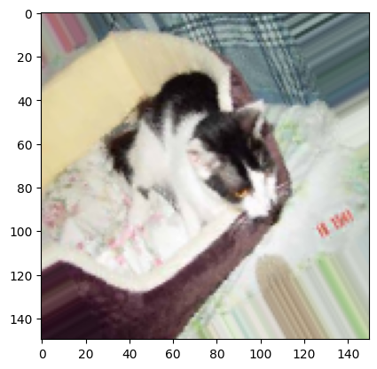
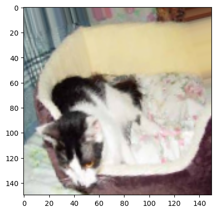
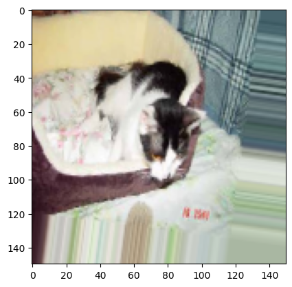
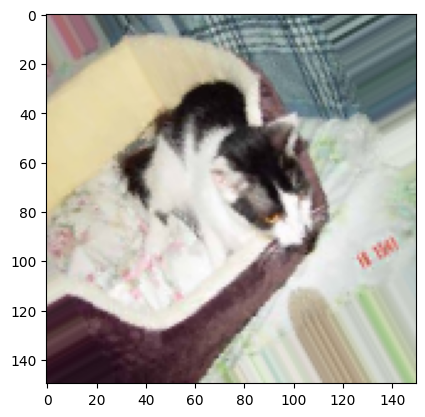
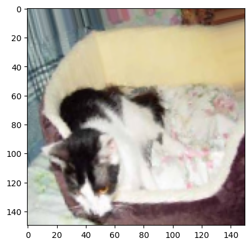
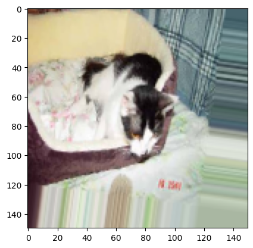

This notebook is by F. Chollet and is included in his book.
import tensorflow as tf
import keras
gpus = tf.config.list_physical_devices('GPU')
for gpu in gpus:
print("Name:", gpu.name, " Type:", gpu.device_type)
2023-03-19 09:23:54.284920: I tensorflow/core/platform/cpu_feature_guard.cc:193] This TensorFlow binary is optimized with oneAPI Deep Neural Network Library (oneDNN) to use the following CPU instructions in performance-critical operations: AVX2 FMA
To enable them in other operations, rebuild TensorFlow with the appropriate compiler flags.
2023-03-19 09:23:54.430436: W tensorflow/compiler/xla/stream_executor/platform/default/dso_loader.cc:64] Could not load dynamic library 'libcudart.so.11.0'; dlerror: libcudart.so.11.0: cannot open shared object file: No such file or directory; LD_LIBRARY_PATH: /opt/hostedtoolcache/Python/3.10.10/x64/lib
2023-03-19 09:23:54.430463: I tensorflow/compiler/xla/stream_executor/cuda/cudart_stub.cc:29] Ignore above cudart dlerror if you do not have a GPU set up on your machine.
2023-03-19 09:23:58.111355: W tensorflow/compiler/xla/stream_executor/platform/default/dso_loader.cc:64] Could not load dynamic library 'libnvinfer.so.7'; dlerror: libnvinfer.so.7: cannot open shared object file: No such file or directory; LD_LIBRARY_PATH: /opt/hostedtoolcache/Python/3.10.10/x64/lib
2023-03-19 09:23:58.111529: W tensorflow/compiler/xla/stream_executor/platform/default/dso_loader.cc:64] Could not load dynamic library 'libnvinfer_plugin.so.7'; dlerror: libnvinfer_plugin.so.7: cannot open shared object file: No such file or directory; LD_LIBRARY_PATH: /opt/hostedtoolcache/Python/3.10.10/x64/lib
2023-03-19 09:23:58.111542: W tensorflow/compiler/tf2tensorrt/utils/py_utils.cc:38] TF-TRT Warning: Cannot dlopen some TensorRT libraries. If you would like to use Nvidia GPU with TensorRT, please make sure the missing libraries mentioned above are installed properly.
2023-03-19 09:24:04.324180: W tensorflow/compiler/xla/stream_executor/platform/default/dso_loader.cc:64] Could not load dynamic library 'libcuda.so.1'; dlerror: libcuda.so.1: cannot open shared object file: No such file or directory; LD_LIBRARY_PATH: /opt/hostedtoolcache/Python/3.10.10/x64/lib
2023-03-19 09:24:04.324216: W tensorflow/compiler/xla/stream_executor/cuda/cuda_driver.cc:265] failed call to cuInit: UNKNOWN ERROR (303)
2023-03-19 09:24:04.324243: I tensorflow/compiler/xla/stream_executor/cuda/cuda_diagnostics.cc:156] kernel driver does not appear to be running on this host (fv-az337-145): /proc/driver/nvidia/version does not exist
Using convnets with small datasets#
This notebook contains the code sample found in Chapter 5, Section 2 of Deep Learning with Python. Note that the original text features far more content, in particular further explanations and figures: in this notebook, you will only find source code and related comments.
Training a convnet from scratch on a small dataset#
Having to train an image classification model using only very little data is a common situation, which you likely encounter yourself in practice if you ever do computer vision in a professional context.
Having “few” samples can mean anywhere from a few hundreds to a few tens of thousands of images. As a practical example, we will focus on classifying images as “dogs” or “cats”, in a dataset containing 4000 pictures of cats and dogs (2000 cats, 2000 dogs). We will use 2000 pictures for training, 1000 for validation, and finally 1000 for testing.
In this section, we will review one basic strategy to tackle this problem: training a new model from scratch on what little data we have. We will start by naively training a small convnet on our 2000 training samples, without any regularization, to set a baseline for what can be achieved. This will get us to a classification accuracy of 71%. At that point, our main issue will be overfitting. Then we will introduce data augmentation, a powerful technique for mitigating overfitting in computer vision. By leveraging data augmentation, we will improve our network to reach an accuracy of 82%.
In the next section, we will review two more essential techniques for applying deep learning to small datasets: doing feature extraction with a pre-trained network (this will get us to an accuracy of 90% to 93%), and fine-tuning a pre-trained network (this will get us to our final accuracy of 95%). Together, these three strategies – training a small model from scratch, doing feature extracting using a pre-trained model, and fine-tuning a pre-trained model – will constitute your future toolbox for tackling the problem of doing computer vision with small datasets.
The relevance of deep learning for small-data problems#
You will sometimes hear that deep learning only works when lots of data is available. This is in part a valid point: one fundamental characteristic of deep learning is that it is able to find interesting features in the training data on its own, without any need for manual feature engineering, and this can only be achieved when lots of training examples are available. This is especially true for problems where the input samples are very high-dimensional, like images.
However, what constitutes “lots” of samples is relative – relative to the size and depth of the network you are trying to train, for starters. It isn’t possible to train a convnet to solve a complex problem with just a few tens of samples, but a few hundreds can potentially suffice if the model is small and well-regularized and if the task is simple. Because convnets learn local, translation-invariant features, they are very data-efficient on perceptual problems. Training a convnet from scratch on a very small image dataset will still yield reasonable results despite a relative lack of data, without the need for any custom feature engineering. You will see this in action in this section.
But what’s more, deep learning models are by nature highly repurposable: you can take, say, an image classification or speech-to-text model trained on a large-scale dataset then reuse it on a significantly different problem with only minor changes. Specifically, in the case of computer vision, many pre-trained models (usually trained on the ImageNet dataset) are now publicly available for download and can be used to bootstrap powerful vision models out of very little data. That’s what we will do in the next section.
For now, let’s get started by getting our hands on the data.
Downloading the data#
The cats vs. dogs dataset that we will use isn’t packaged with Keras. It was made available by Kaggle.com as part of a computer vision
competition in late 2013, back when convnets weren’t quite mainstream. You can download the original dataset at:
https://www.kaggle.com/c/dogs-vs-cats/data (you will need to create a Kaggle account if you don’t already have one – don’t worry, the
process is painless).
The pictures are medium-resolution color JPEGs. They look like this:

Unsurprisingly, the cats vs. dogs Kaggle competition in 2013 was won by entrants who used convnets. The best entries could achieve up to 95% accuracy. In our own example, we will get fairly close to this accuracy (in the next section), even though we will be training our models on less than 10% of the data that was available to the competitors. This original dataset contains 25,000 images of dogs and cats (12,500 from each class) and is 543MB large (compressed). After downloading and uncompressing it, we will create a new dataset containing three subsets: a training set with 1000 samples of each class, a validation set with 500 samples of each class, and finally a test set with 500 samples of each class.
Here are a few lines of code to do this:
import os, shutil
# Unzip file
!mkdir -p dogscats/subset
!unzip -o -q dogs-vs-cats-subset.zip -d dogscats
base_dir = 'dogscats/subset'
train_dir = os.path.join(base_dir, 'train')
train_cats_dir = os.path.join(base_dir, 'train', 'cats')
train_dogs_dir = os.path.join(base_dir, 'train', 'dogs')
validation_dir = os.path.join(base_dir, 'validation')
test_dir = os.path.join(base_dir, 'test')
So we have indeed 2000 training images, and then 1000 validation images and 1000 test images. In each split, there is the same number of samples from each class: this is a balanced binary classification problem, which means that classification accuracy will be an appropriate measure of success.
Building our network#
We’ve already built a small convnet for MNIST in the previous example, so you should be familiar with them. We will reuse the same
general structure: our convnet will be a stack of alternated Conv2D (with relu activation) and MaxPooling2D layers.
However, since we are dealing with bigger images and a more complex problem, we will make our network accordingly larger: it will have one
more Conv2D + MaxPooling2D stage. This serves both to augment the capacity of the network, and to further reduce the size of the
feature maps, so that they aren’t overly large when we reach the Flatten layer. Here, since we start from inputs of size 150x150 (a
somewhat arbitrary choice), we end up with feature maps of size 7x7 right before the Flatten layer.
Note that the depth of the feature maps is progressively increasing in the network (from 32 to 128), while the size of the feature maps is decreasing (from 148x148 to 7x7). This is a pattern that you will see in almost all convnets.
Since we are attacking a binary classification problem, we are ending the network with a single unit (a Dense layer of size 1) and a
sigmoid activation. This unit will encode the probability that the network is looking at one class or the other.
from keras import layers
from keras import models
model = models.Sequential()
model.add(layers.Conv2D(32, (3, 3), activation='relu',
input_shape=(150, 150, 3)))
model.add(layers.MaxPooling2D((2, 2)))
model.add(layers.Conv2D(64, (3, 3), activation='relu'))
model.add(layers.MaxPooling2D((2, 2)))
model.add(layers.Conv2D(128, (3, 3), activation='relu'))
model.add(layers.MaxPooling2D((2, 2)))
model.add(layers.Conv2D(128, (3, 3), activation='relu'))
model.add(layers.MaxPooling2D((2, 2)))
model.add(layers.Flatten())
model.add(layers.Dense(512, activation='relu'))
model.add(layers.Dense(1, activation='sigmoid'))
2023-03-19 09:24:05.708720: I tensorflow/core/platform/cpu_feature_guard.cc:193] This TensorFlow binary is optimized with oneAPI Deep Neural Network Library (oneDNN) to use the following CPU instructions in performance-critical operations: AVX2 FMA
To enable them in other operations, rebuild TensorFlow with the appropriate compiler flags.
Let’s take a look at how the dimensions of the feature maps change with every successive layer:
model.summary()
Model: "sequential"
_________________________________________________________________
Layer (type) Output Shape Param #
=================================================================
conv2d (Conv2D) (None, 148, 148, 32) 896
max_pooling2d (MaxPooling2D (None, 74, 74, 32) 0
)
conv2d_1 (Conv2D) (None, 72, 72, 64) 18496
max_pooling2d_1 (MaxPooling (None, 36, 36, 64) 0
2D)
conv2d_2 (Conv2D) (None, 34, 34, 128) 73856
max_pooling2d_2 (MaxPooling (None, 17, 17, 128) 0
2D)
conv2d_3 (Conv2D) (None, 15, 15, 128) 147584
max_pooling2d_3 (MaxPooling (None, 7, 7, 128) 0
2D)
flatten (Flatten) (None, 6272) 0
dense (Dense) (None, 512) 3211776
dense_1 (Dense) (None, 1) 513
=================================================================
Total params: 3,453,121
Trainable params: 3,453,121
Non-trainable params: 0
_________________________________________________________________
For our compilation step, we’ll go with the RMSprop optimizer as usual. Since we ended our network with a single sigmoid unit, we will
use binary crossentropy as our loss (as a reminder, check out the table in Chapter 4, section 5 for a cheatsheet on what loss function to
use in various situations).
from keras import optimizers
model.compile(loss='binary_crossentropy',
optimizer=optimizers.RMSprop(lr=1e-4),
metrics=['acc'])
/home/runner/work/artificial-intelligence/artificial-intelligence/.venv/lib/python3.10/site-packages/keras/optimizers/optimizer_v2/rmsprop.py:143: UserWarning: The `lr` argument is deprecated, use `learning_rate` instead.
super().__init__(name, **kwargs)
Data preprocessing#
As you already know by now, data should be formatted into appropriately pre-processed floating point tensors before being fed into our network. Currently, our data sits on a drive as JPEG files, so the steps for getting it into our network are roughly:
Read the picture files.
Decode the JPEG content to RBG grids of pixels.
Convert these into floating point tensors.
Rescale the pixel values (between 0 and 255) to the [0, 1] interval (as you know, neural networks prefer to deal with small input values).
It may seem a bit daunting, but thankfully Keras has utilities to take care of these steps automatically. Keras has a module with image
processing helper tools, located at keras.preprocessing.image. In particular, it contains the class ImageDataGenerator which allows to
quickly set up Python generators that can automatically turn image files on disk into batches of pre-processed tensors. This is what we
will use here.
from keras.preprocessing.image import ImageDataGenerator
# All images will be rescaled by 1./255
train_datagen = ImageDataGenerator(rescale=1./255)
test_datagen = ImageDataGenerator(rescale=1./255)
train_generator = train_datagen.flow_from_directory(
# This is the target directory
train_dir,
# All images will be resized to 150x150
target_size=(150, 150),
batch_size=20,
# Since we use binary_crossentropy loss, we need binary labels
class_mode='binary')
validation_generator = test_datagen.flow_from_directory(
validation_dir,
target_size=(150, 150),
batch_size=20,
class_mode='binary')
Found 2000 images belonging to 2 classes.
Found 1000 images belonging to 2 classes.
Let’s take a look at the output of one of these generators: it yields batches of 150x150 RGB images (shape (20, 150, 150, 3)) and binary
labels (shape (20,)). 20 is the number of samples in each batch (the batch size). Note that the generator yields these batches
indefinitely: it just loops endlessly over the images present in the target folder. For this reason, we need to break the iteration loop
at some point.
for data_batch, labels_batch in train_generator:
print('data batch shape:', data_batch.shape)
print('labels batch shape:', labels_batch.shape)
break
data batch shape: (20, 150, 150, 3)
labels batch shape: (20,)
Let’s fit our model to the data using the generator. We do it using the fit_generator method, the equivalent of fit for data generators
like ours. It expects as first argument a Python generator that will yield batches of inputs and targets indefinitely, like ours does.
Because the data is being generated endlessly, the generator needs to know example how many samples to draw from the generator before
declaring an epoch over. This is the role of the steps_per_epoch argument: after having drawn steps_per_epoch batches from the
generator, i.e. after having run for steps_per_epoch gradient descent steps, the fitting process will go to the next epoch. In our case,
batches are 20-sample large, so it will take 100 batches until we see our target of 2000 samples.
When using fit_generator, one may pass a validation_data argument, much like with the fit method. Importantly, this argument is
allowed to be a data generator itself, but it could be a tuple of Numpy arrays as well. If you pass a generator as validation_data, then
this generator is expected to yield batches of validation data endlessly, and thus you should also specify the validation_steps argument,
which tells the process how many batches to draw from the validation generator for evaluation.
history = model.fit_generator(
train_generator,
steps_per_epoch=100,
epochs=30,
validation_data=validation_generator,
validation_steps=50)
Epoch 1/30
100/100 [==============================] - 77s 759ms/step - loss: 0.6909 - acc: 0.5305 - val_loss: 0.6670 - val_acc: 0.6010
Epoch 2/30
100/100 [==============================] - 75s 755ms/step - loss: 0.6516 - acc: 0.6180 - val_loss: 0.6308 - val_acc: 0.6390
Epoch 3/30
100/100 [==============================] - 75s 752ms/step - loss: 0.6007 - acc: 0.6800 - val_loss: 0.6022 - val_acc: 0.6580
Epoch 4/30
100/100 [==============================] - 75s 753ms/step - loss: 0.5633 - acc: 0.7080 - val_loss: 0.5882 - val_acc: 0.6740
Epoch 5/30
100/100 [==============================] - 76s 756ms/step - loss: 0.5272 - acc: 0.7340 - val_loss: 0.5928 - val_acc: 0.6680
Epoch 6/30
100/100 [==============================] - 75s 750ms/step - loss: 0.5005 - acc: 0.7545 - val_loss: 0.5686 - val_acc: 0.7030
Epoch 7/30
100/100 [==============================] - 76s 757ms/step - loss: 0.4693 - acc: 0.7775 - val_loss: 0.5692 - val_acc: 0.7150
Epoch 8/30
100/100 [==============================] - 75s 751ms/step - loss: 0.4496 - acc: 0.7945 - val_loss: 0.5926 - val_acc: 0.6950
Epoch 9/30
100/100 [==============================] - 76s 757ms/step - loss: 0.4118 - acc: 0.8195 - val_loss: 0.5754 - val_acc: 0.7130
Epoch 10/30
100/100 [==============================] - 77s 766ms/step - loss: 0.3881 - acc: 0.8235 - val_loss: 0.5797 - val_acc: 0.7200
Epoch 11/30
100/100 [==============================] - 77s 768ms/step - loss: 0.3669 - acc: 0.8340 - val_loss: 0.5480 - val_acc: 0.7300
Epoch 12/30
100/100 [==============================] - 74s 737ms/step - loss: 0.3425 - acc: 0.8520 - val_loss: 0.5771 - val_acc: 0.7190
Epoch 13/30
100/100 [==============================] - 76s 764ms/step - loss: 0.3091 - acc: 0.8725 - val_loss: 0.5809 - val_acc: 0.7240
Epoch 14/30
100/100 [==============================] - 74s 736ms/step - loss: 0.2802 - acc: 0.8820 - val_loss: 0.6018 - val_acc: 0.7220
Epoch 15/30
100/100 [==============================] - 75s 751ms/step - loss: 0.2703 - acc: 0.8925 - val_loss: 0.6176 - val_acc: 0.7260
Epoch 16/30
100/100 [==============================] - 75s 750ms/step - loss: 0.2406 - acc: 0.9010 - val_loss: 0.6161 - val_acc: 0.7390
Epoch 17/30
100/100 [==============================] - 74s 737ms/step - loss: 0.2181 - acc: 0.9105 - val_loss: 0.6476 - val_acc: 0.7240
Epoch 18/30
100/100 [==============================] - 76s 758ms/step - loss: 0.1957 - acc: 0.9300 - val_loss: 0.6637 - val_acc: 0.7370
Epoch 19/30
100/100 [==============================] - 75s 748ms/step - loss: 0.1680 - acc: 0.9370 - val_loss: 0.6526 - val_acc: 0.7320
Epoch 20/30
100/100 [==============================] - 74s 739ms/step - loss: 0.1460 - acc: 0.9475 - val_loss: 0.7217 - val_acc: 0.7250
Epoch 21/30
100/100 [==============================] - 74s 742ms/step - loss: 0.1285 - acc: 0.9555 - val_loss: 0.7431 - val_acc: 0.7410
Epoch 22/30
100/100 [==============================] - 73s 732ms/step - loss: 0.1139 - acc: 0.9680 - val_loss: 0.7605 - val_acc: 0.7320
Epoch 23/30
100/100 [==============================] - 75s 753ms/step - loss: 0.0946 - acc: 0.9725 - val_loss: 0.9036 - val_acc: 0.7200
Epoch 24/30
100/100 [==============================] - 75s 753ms/step - loss: 0.0826 - acc: 0.9780 - val_loss: 0.8580 - val_acc: 0.7270
Epoch 25/30
100/100 [==============================] - 76s 760ms/step - loss: 0.0721 - acc: 0.9805 - val_loss: 0.8928 - val_acc: 0.7370
Epoch 26/30
100/100 [==============================] - 74s 737ms/step - loss: 0.0623 - acc: 0.9840 - val_loss: 0.9235 - val_acc: 0.7360
Epoch 27/30
100/100 [==============================] - 76s 758ms/step - loss: 0.0499 - acc: 0.9855 - val_loss: 0.9413 - val_acc: 0.7380
Epoch 28/30
100/100 [==============================] - 74s 740ms/step - loss: 0.0471 - acc: 0.9885 - val_loss: 1.1100 - val_acc: 0.7090
Epoch 29/30
100/100 [==============================] - 76s 761ms/step - loss: 0.0401 - acc: 0.9890 - val_loss: 1.0663 - val_acc: 0.7220
Epoch 30/30
100/100 [==============================] - 76s 758ms/step - loss: 0.0292 - acc: 0.9920 - val_loss: 1.0786 - val_acc: 0.7300
/tmp/ipykernel_2422/3259228942.py:1: UserWarning: `Model.fit_generator` is deprecated and will be removed in a future version. Please use `Model.fit`, which supports generators.
history = model.fit_generator(
2023-03-19 09:24:07.404637: W tensorflow/tsl/framework/cpu_allocator_impl.cc:82] Allocation of 56074240 exceeds 10% of free system memory.
2023-03-19 09:24:07.497563: W tensorflow/tsl/framework/cpu_allocator_impl.cc:82] Allocation of 14018560 exceeds 10% of free system memory.
2023-03-19 09:24:07.512269: W tensorflow/tsl/framework/cpu_allocator_impl.cc:82] Allocation of 26542080 exceeds 10% of free system memory.
2023-03-19 09:24:07.647338: W tensorflow/tsl/framework/cpu_allocator_impl.cc:82] Allocation of 19699200 exceeds 10% of free system memory.
2023-03-19 09:24:07.748006: W tensorflow/tsl/framework/cpu_allocator_impl.cc:82] Allocation of 23970816 exceeds 10% of free system memory.
It is good practice to always save your models after training:
model.save('cats_and_dogs_small_1.h5')
Let’s plot the loss and accuracy of the model over the training and validation data during training:
import matplotlib.pyplot as plt
acc = history.history['acc']
val_acc = history.history['val_acc']
loss = history.history['loss']
val_loss = history.history['val_loss']
epochs = range(len(acc))
plt.plot(epochs, acc, 'bo', label='Training acc')
plt.plot(epochs, val_acc, 'b', label='Validation acc')
plt.title('Training and validation accuracy')
plt.legend()
plt.figure()
plt.plot(epochs, loss, 'bo', label='Training loss')
plt.plot(epochs, val_loss, 'b', label='Validation loss')
plt.title('Training and validation loss')
plt.legend()
plt.show()
These plots are characteristic of overfitting. Our training accuracy increases linearly over time, until it reaches nearly 100%, while our validation accuracy stalls at 70-72%. Our validation loss reaches its minimum after only five epochs then stalls, while the training loss keeps decreasing linearly until it reaches nearly 0.
Because we only have relatively few training samples (2000), overfitting is going to be our number one concern. You already know about a number of techniques that can help mitigate overfitting, such as dropout and weight decay (L2 regularization). We are now going to introduce a new one, specific to computer vision, and used almost universally when processing images with deep learning models: data augmentation.
Using data augmentation#
Overfitting is caused by having too few samples to learn from, rendering us unable to train a model able to generalize to new data. Given infinite data, our model would be exposed to every possible aspect of the data distribution at hand: we would never overfit. Data augmentation takes the approach of generating more training data from existing training samples, by “augmenting” the samples via a number of random transformations that yield believable-looking images. The goal is that at training time, our model would never see the exact same picture twice. This helps the model get exposed to more aspects of the data and generalize better.
In Keras, this can be done by configuring a number of random transformations to be performed on the images read by our ImageDataGenerator
instance. Let’s get started with an example:
datagen = ImageDataGenerator(
rotation_range=40,
width_shift_range=0.2,
height_shift_range=0.2,
shear_range=0.2,
zoom_range=0.2,
horizontal_flip=True,
fill_mode='nearest')
These are just a few of the options available (for more, see the Keras documentation). Let’s quickly go over what we just wrote:
rotation_rangeis a value in degrees (0-180), a range within which to randomly rotate pictures.width_shiftandheight_shiftare ranges (as a fraction of total width or height) within which to randomly translate pictures vertically or horizontally.shear_rangeis for randomly applying shearing transformations.zoom_rangeis for randomly zooming inside pictures.horizontal_flipis for randomly flipping half of the images horizontally – relevant when there are no assumptions of horizontal asymmetry (e.g. real-world pictures).fill_modeis the strategy used for filling in newly created pixels, which can appear after a rotation or a width/height shift.
Let’s take a look at our augmented images:
# This is module with image preprocessing utilities
import keras.utils as image
fnames = [os.path.join(train_cats_dir, fname) for fname in os.listdir(train_cats_dir)]
# We pick one image to "augment"
img_path = fnames[3]
# Read the image and resize it
img = image.load_img(img_path, target_size=(150, 150))
# Convert it to a Numpy array with shape (150, 150, 3)
x = image.img_to_array(img)
# Reshape it to (1, 150, 150, 3)
x = x.reshape((1,) + x.shape)
# The .flow() command below generates batches of randomly transformed images.
# It will loop indefinitely, so we need to `break` the loop at some point!
i = 0
for batch in datagen.flow(x, batch_size=1):
plt.figure(i)
imgplot = plt.imshow(image.array_to_img(batch[0]))
i += 1
if i % 4 == 0:
break
plt.show()
 





If we train a new network using this data augmentation configuration, our network will never see twice the same input. However, the inputs that it sees are still heavily intercorrelated, since they come from a small number of original images – we cannot produce new information, we can only remix existing information. As such, this might not be quite enough to completely get rid of overfitting. To further fight overfitting, we will also add a Dropout layer to our model, right before the densely-connected classifier:
model = models.Sequential()
model.add(layers.Conv2D(32, (3, 3), activation='relu',
input_shape=(150, 150, 3)))
model.add(layers.MaxPooling2D((2, 2)))
model.add(layers.Conv2D(64, (3, 3), activation='relu'))
model.add(layers.MaxPooling2D((2, 2)))
model.add(layers.Conv2D(128, (3, 3), activation='relu'))
model.add(layers.MaxPooling2D((2, 2)))
model.add(layers.Conv2D(128, (3, 3), activation='relu'))
model.add(layers.MaxPooling2D((2, 2)))
model.add(layers.Flatten())
model.add(layers.Dropout(0.5))
model.add(layers.Dense(512, activation='relu'))
model.add(layers.Dense(1, activation='sigmoid'))
model.compile(loss='binary_crossentropy',
optimizer=optimizers.RMSprop(lr=1e-4),
metrics=['acc'])
/home/runner/work/artificial-intelligence/artificial-intelligence/.venv/lib/python3.10/site-packages/keras/optimizers/optimizer_v2/rmsprop.py:143: UserWarning: The `lr` argument is deprecated, use `learning_rate` instead.
super().__init__(name, **kwargs)
Let’s train our network using data augmentation and dropout:
train_datagen = ImageDataGenerator(
rescale=1./255,
rotation_range=40,
width_shift_range=0.2,
height_shift_range=0.2,
shear_range=0.2,
zoom_range=0.2,
horizontal_flip=True,)
# Note that the validation data should not be augmented!
validation_datagen = ImageDataGenerator(rescale=1./255)
train_generator = train_datagen.flow_from_directory(
# This is the target directory
train_dir,
# All images will be resized to 150x150
target_size=(150, 150),
batch_size=32,
# Since we use binary_crossentropy loss, we need binary labels
class_mode='binary')
validation_generator = validation_datagen.flow_from_directory(
validation_dir,
target_size=(150, 150),
batch_size=32,
class_mode='binary')
history = model.fit(
train_generator,
steps_per_epoch=2000//train_generator.batch_size,
epochs=100,
validation_data=validation_generator,
validation_steps=1000//validation_generator.batch_size)
Found 2000 images belonging to 2 classes.
Found 1000 images belonging to 2 classes.
Epoch 1/100
62/62 [==============================] - 77s 1s/step - loss: 0.6958 - acc: 0.5025 - val_loss: 0.6888 - val_acc: 0.5464
Epoch 2/100
62/62 [==============================] - 75s 1s/step - loss: 0.6906 - acc: 0.5279 - val_loss: 0.6817 - val_acc: 0.6200
Epoch 3/100
62/62 [==============================] - 78s 1s/step - loss: 0.6841 - acc: 0.5615 - val_loss: 0.6709 - val_acc: 0.5867
Epoch 4/100
62/62 [==============================] - 77s 1s/step - loss: 0.6706 - acc: 0.5859 - val_loss: 0.6914 - val_acc: 0.5141
Epoch 5/100
62/62 [==============================] - 76s 1s/step - loss: 0.6595 - acc: 0.6016 - val_loss: 0.6398 - val_acc: 0.6220
Epoch 6/100
62/62 [==============================] - 79s 1s/step - loss: 0.6522 - acc: 0.6026 - val_loss: 0.6317 - val_acc: 0.6290
Epoch 7/100
62/62 [==============================] - 78s 1s/step - loss: 0.6359 - acc: 0.6301 - val_loss: 0.6546 - val_acc: 0.5817
Epoch 8/100
62/62 [==============================] - 77s 1s/step - loss: 0.6268 - acc: 0.6433 - val_loss: 0.7000 - val_acc: 0.5736
Epoch 9/100
62/62 [==============================] - 77s 1s/step - loss: 0.6236 - acc: 0.6402 - val_loss: 0.5874 - val_acc: 0.6845
Epoch 10/100
62/62 [==============================] - 77s 1s/step - loss: 0.6134 - acc: 0.6687 - val_loss: 0.5786 - val_acc: 0.6935
Epoch 11/100
62/62 [==============================] - 76s 1s/step - loss: 0.6051 - acc: 0.6626 - val_loss: 0.5718 - val_acc: 0.6996
Epoch 12/100
62/62 [==============================] - 77s 1s/step - loss: 0.5987 - acc: 0.6712 - val_loss: 0.6158 - val_acc: 0.6522
Epoch 13/100
62/62 [==============================] - 77s 1s/step - loss: 0.5948 - acc: 0.6829 - val_loss: 0.5671 - val_acc: 0.6935
Epoch 14/100
62/62 [==============================] - 79s 1s/step - loss: 0.5815 - acc: 0.6900 - val_loss: 0.5815 - val_acc: 0.6865
Epoch 15/100
62/62 [==============================] - 77s 1s/step - loss: 0.5903 - acc: 0.6824 - val_loss: 0.5487 - val_acc: 0.7167
Epoch 16/100
62/62 [==============================] - 78s 1s/step - loss: 0.5748 - acc: 0.6905 - val_loss: 0.5496 - val_acc: 0.6996
Epoch 17/100
62/62 [==============================] - 77s 1s/step - loss: 0.5775 - acc: 0.6885 - val_loss: 0.5641 - val_acc: 0.7056
Epoch 18/100
62/62 [==============================] - 77s 1s/step - loss: 0.5764 - acc: 0.6992 - val_loss: 0.5627 - val_acc: 0.7006
Epoch 19/100
62/62 [==============================] - 79s 1s/step - loss: 0.5648 - acc: 0.6977 - val_loss: 0.6036 - val_acc: 0.6744
Epoch 20/100
62/62 [==============================] - 78s 1s/step - loss: 0.5612 - acc: 0.7119 - val_loss: 0.6217 - val_acc: 0.6653
Epoch 21/100
62/62 [==============================] - 79s 1s/step - loss: 0.5651 - acc: 0.7104 - val_loss: 0.5472 - val_acc: 0.7157
Epoch 22/100
62/62 [==============================] - 80s 1s/step - loss: 0.5561 - acc: 0.7175 - val_loss: 0.5469 - val_acc: 0.7056
Epoch 23/100
62/62 [==============================] - 79s 1s/step - loss: 0.5596 - acc: 0.7099 - val_loss: 0.5471 - val_acc: 0.7137
Epoch 24/100
62/62 [==============================] - 79s 1s/step - loss: 0.5606 - acc: 0.7190 - val_loss: 0.5210 - val_acc: 0.7369
Epoch 25/100
62/62 [==============================] - 83s 1s/step - loss: 0.5447 - acc: 0.7215 - val_loss: 0.5369 - val_acc: 0.7177
Epoch 26/100
62/62 [==============================] - 79s 1s/step - loss: 0.5502 - acc: 0.7134 - val_loss: 0.5467 - val_acc: 0.7198
Epoch 27/100
62/62 [==============================] - 77s 1s/step - loss: 0.5338 - acc: 0.7271 - val_loss: 0.5433 - val_acc: 0.7228
Epoch 28/100
62/62 [==============================] - 79s 1s/step - loss: 0.5405 - acc: 0.7271 - val_loss: 0.5089 - val_acc: 0.7419
Epoch 29/100
62/62 [==============================] - 77s 1s/step - loss: 0.5369 - acc: 0.7256 - val_loss: 0.5436 - val_acc: 0.7208
Epoch 30/100
62/62 [==============================] - 79s 1s/step - loss: 0.5411 - acc: 0.7261 - val_loss: 0.5193 - val_acc: 0.7419
Epoch 31/100
62/62 [==============================] - 79s 1s/step - loss: 0.5343 - acc: 0.7256 - val_loss: 0.5038 - val_acc: 0.7409
Epoch 32/100
62/62 [==============================] - 79s 1s/step - loss: 0.5236 - acc: 0.7358 - val_loss: 0.5299 - val_acc: 0.7278
Epoch 33/100
62/62 [==============================] - 79s 1s/step - loss: 0.5286 - acc: 0.7383 - val_loss: 0.5493 - val_acc: 0.7188
Epoch 34/100
62/62 [==============================] - 79s 1s/step - loss: 0.5169 - acc: 0.7459 - val_loss: 0.5391 - val_acc: 0.7258
Epoch 35/100
62/62 [==============================] - 78s 1s/step - loss: 0.5097 - acc: 0.7419 - val_loss: 0.5729 - val_acc: 0.7067
Epoch 36/100
62/62 [==============================] - 80s 1s/step - loss: 0.5155 - acc: 0.7530 - val_loss: 0.6130 - val_acc: 0.6915
Epoch 37/100
62/62 [==============================] - 78s 1s/step - loss: 0.5189 - acc: 0.7342 - val_loss: 0.5607 - val_acc: 0.7046
Epoch 38/100
62/62 [==============================] - 78s 1s/step - loss: 0.5172 - acc: 0.7388 - val_loss: 0.5014 - val_acc: 0.7631
Epoch 39/100
62/62 [==============================] - 79s 1s/step - loss: 0.5129 - acc: 0.7485 - val_loss: 0.5477 - val_acc: 0.7288
Epoch 40/100
62/62 [==============================] - 78s 1s/step - loss: 0.5012 - acc: 0.7520 - val_loss: 0.4766 - val_acc: 0.7581
Epoch 41/100
62/62 [==============================] - 80s 1s/step - loss: 0.4944 - acc: 0.7586 - val_loss: 0.4694 - val_acc: 0.7782
Epoch 42/100
62/62 [==============================] - 79s 1s/step - loss: 0.5015 - acc: 0.7530 - val_loss: 0.5279 - val_acc: 0.7450
Epoch 43/100
62/62 [==============================] - 81s 1s/step - loss: 0.5051 - acc: 0.7510 - val_loss: 0.4888 - val_acc: 0.7742
Epoch 44/100
54/62 [=========================>....] - ETA: 8s - loss: 0.5039 - acc: 0.7500
---------------------------------------------------------------------------
KeyboardInterrupt Traceback (most recent call last)
Cell In[16], line 28
13 train_generator = train_datagen.flow_from_directory(
14 # This is the target directory
15 train_dir,
(...)
19 # Since we use binary_crossentropy loss, we need binary labels
20 class_mode='binary')
22 validation_generator = validation_datagen.flow_from_directory(
23 validation_dir,
24 target_size=(150, 150),
25 batch_size=32,
26 class_mode='binary')
---> 28 history = model.fit(
29 train_generator,
30 steps_per_epoch=2000//train_generator.batch_size,
31 epochs=100,
32 validation_data=validation_generator,
33 validation_steps=1000//validation_generator.batch_size)
File ~/work/artificial-intelligence/artificial-intelligence/.venv/lib/python3.10/site-packages/keras/utils/traceback_utils.py:65, in filter_traceback.<locals>.error_handler(*args, **kwargs)
63 filtered_tb = None
64 try:
---> 65 return fn(*args, **kwargs)
66 except Exception as e:
67 filtered_tb = _process_traceback_frames(e.__traceback__)
File ~/work/artificial-intelligence/artificial-intelligence/.venv/lib/python3.10/site-packages/keras/engine/training.py:1650, in Model.fit(self, x, y, batch_size, epochs, verbose, callbacks, validation_split, validation_data, shuffle, class_weight, sample_weight, initial_epoch, steps_per_epoch, validation_steps, validation_batch_size, validation_freq, max_queue_size, workers, use_multiprocessing)
1642 with tf.profiler.experimental.Trace(
1643 "train",
1644 epoch_num=epoch,
(...)
1647 _r=1,
1648 ):
1649 callbacks.on_train_batch_begin(step)
-> 1650 tmp_logs = self.train_function(iterator)
1651 if data_handler.should_sync:
1652 context.async_wait()
File ~/work/artificial-intelligence/artificial-intelligence/.venv/lib/python3.10/site-packages/tensorflow/python/util/traceback_utils.py:150, in filter_traceback.<locals>.error_handler(*args, **kwargs)
148 filtered_tb = None
149 try:
--> 150 return fn(*args, **kwargs)
151 except Exception as e:
152 filtered_tb = _process_traceback_frames(e.__traceback__)
File ~/work/artificial-intelligence/artificial-intelligence/.venv/lib/python3.10/site-packages/tensorflow/python/eager/polymorphic_function/polymorphic_function.py:880, in Function.__call__(self, *args, **kwds)
877 compiler = "xla" if self._jit_compile else "nonXla"
879 with OptionalXlaContext(self._jit_compile):
--> 880 result = self._call(*args, **kwds)
882 new_tracing_count = self.experimental_get_tracing_count()
883 without_tracing = (tracing_count == new_tracing_count)
File ~/work/artificial-intelligence/artificial-intelligence/.venv/lib/python3.10/site-packages/tensorflow/python/eager/polymorphic_function/polymorphic_function.py:912, in Function._call(self, *args, **kwds)
909 self._lock.release()
910 # In this case we have created variables on the first call, so we run the
911 # defunned version which is guaranteed to never create variables.
--> 912 return self._no_variable_creation_fn(*args, **kwds) # pylint: disable=not-callable
913 elif self._variable_creation_fn is not None:
914 # Release the lock early so that multiple threads can perform the call
915 # in parallel.
916 self._lock.release()
File ~/work/artificial-intelligence/artificial-intelligence/.venv/lib/python3.10/site-packages/tensorflow/python/eager/polymorphic_function/tracing_compiler.py:134, in TracingCompiler.__call__(self, *args, **kwargs)
131 with self._lock:
132 (concrete_function,
133 filtered_flat_args) = self._maybe_define_function(args, kwargs)
--> 134 return concrete_function._call_flat(
135 filtered_flat_args, captured_inputs=concrete_function.captured_inputs)
File ~/work/artificial-intelligence/artificial-intelligence/.venv/lib/python3.10/site-packages/tensorflow/python/eager/polymorphic_function/monomorphic_function.py:1745, in ConcreteFunction._call_flat(self, args, captured_inputs, cancellation_manager)
1741 possible_gradient_type = gradients_util.PossibleTapeGradientTypes(args)
1742 if (possible_gradient_type == gradients_util.POSSIBLE_GRADIENT_TYPES_NONE
1743 and executing_eagerly):
1744 # No tape is watching; skip to running the function.
-> 1745 return self._build_call_outputs(self._inference_function.call(
1746 ctx, args, cancellation_manager=cancellation_manager))
1747 forward_backward = self._select_forward_and_backward_functions(
1748 args,
1749 possible_gradient_type,
1750 executing_eagerly)
1751 forward_function, args_with_tangents = forward_backward.forward()
File ~/work/artificial-intelligence/artificial-intelligence/.venv/lib/python3.10/site-packages/tensorflow/python/eager/polymorphic_function/monomorphic_function.py:378, in _EagerDefinedFunction.call(self, ctx, args, cancellation_manager)
376 with _InterpolateFunctionError(self):
377 if cancellation_manager is None:
--> 378 outputs = execute.execute(
379 str(self.signature.name),
380 num_outputs=self._num_outputs,
381 inputs=args,
382 attrs=attrs,
383 ctx=ctx)
384 else:
385 outputs = execute.execute_with_cancellation(
386 str(self.signature.name),
387 num_outputs=self._num_outputs,
(...)
390 ctx=ctx,
391 cancellation_manager=cancellation_manager)
File ~/work/artificial-intelligence/artificial-intelligence/.venv/lib/python3.10/site-packages/tensorflow/python/eager/execute.py:52, in quick_execute(op_name, num_outputs, inputs, attrs, ctx, name)
50 try:
51 ctx.ensure_initialized()
---> 52 tensors = pywrap_tfe.TFE_Py_Execute(ctx._handle, device_name, op_name,
53 inputs, attrs, num_outputs)
54 except core._NotOkStatusException as e:
55 if name is not None:
KeyboardInterrupt:
Let’s save our model – we will be using it in the section on convnet visualization.
model.save('cats_and_dogs_small_2.h5')
Let’s plot our results again:
acc = history.history['acc']
val_acc = history.history['val_acc']
loss = history.history['loss']
val_loss = history.history['val_loss']
epochs = range(len(acc))
plt.plot(epochs, acc, 'bo', label='Training acc')
plt.plot(epochs, val_acc, 'b', label='Validation acc')
plt.title('Training and validation accuracy')
plt.legend()
plt.figure()
plt.plot(epochs, loss, 'bo', label='Training loss')
plt.plot(epochs, val_loss, 'b', label='Validation loss')
plt.title('Training and validation loss')
plt.legend()
plt.show()


Thanks to data augmentation and dropout, we are no longer overfitting: the training curves are rather closely tracking the validation curves. We are now able to reach an accuracy of 82%, a 15% relative improvement over the non-regularized model.
By leveraging regularization techniques even further and by tuning the network’s parameters (such as the number of filters per convolution layer, or the number of layers in the network), we may be able to get an even better accuracy, likely up to 86-87%. However, it would prove very difficult to go any higher just by training our own convnet from scratch, simply because we have so little data to work with. As a next step to improve our accuracy on this problem, we will have to leverage a pre-trained model, which will be the focus of the next two sections.